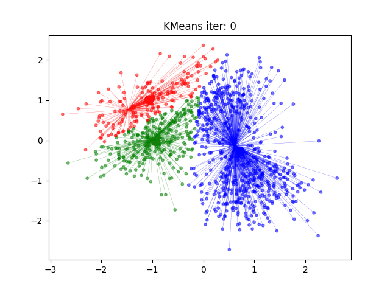

K-means
K-means – bu klasterlash (clustering) algoritmi. U nazoratsiz(o‘qituvchisiz) o‘rganish (unsupervised learning) guruhiga kiradi. Ya’ni, bizda oldindan tayyor yorliqlar (labels) yo‘q, faqat berilganlar bor. Algoritmning vazifasi – o‘xshash obyektlarni guruhlash.
Masalan: mijozlarni xarid qilish odatlariga qarab guruhlash, hujjatlarni mavzulariga qarab ajratish va hokazo.
Asosiy g‘oya
Klasterlar sonini tanlaymiz (K)
Algoritm ma’lumotlarni shunday bo‘lishga harakat qiladiki:
Har bir obyekt yaqin bo‘lgan klaster markaziga (centroid) tegishli bo‘ladi.
Klaster ichidagi obyektlar o‘zaro o‘xshash, boshqa klasterdagi obyektlardan farqli bo‘ladi.
Ishlash bosqichlari
K-means iterativ ishlaydi:
Boshlang‘ich markazlarni tanlash
Tasodifiy tanlanadi yoki maxsus usullar (k-means++) ishlatiladi.
Obyektlarni klasterlarga ajratish
Har bir obyekt uchun eng yaqin markaz hisoblanadi.
Masofa odatda Evklid masofasi bo‘yicha topiladi:
\[ d(x, c) = \sqrt{\sum (x_i - c_i)^2} \]
Markazlarni yangilash
Har bir klasterga tegishli obyektlarning o‘rtacha qiymati olinadi:
\[ c_j = \frac{1}{n_j} \sum_{x \in C_j} x \]
Takrorlash
2 va 3-bosqichlar takrorlanadi.
Markazlar o‘zgarmasa yoki juda ozgina o‘zgarsa – jarayon to‘xtaydi.
Afzalliklari
Oddiy va tez ishlaydi.
Katta ma’lumotlarda samarali.
Natija tushunarli – har bir obyekt qaysi klasterga tegishli ekanligi ko‘rinadi.
Kamchiliklari
K qiymatini oldindan berish kerak.
Klasterlar sferik shaklda bo‘lishini taxmin qiladi.
Agar klasterlar har xil kattalikda yoki zichlikda bo‘lsa – yaxshi ishlamaydi.
Boshlang‘ich markazlar noto‘g‘ri tanlansa, yomon natija chiqishi mumkin.
K qiymatini tanlash usullari
Elbow method (tirsak usuli) – turli K qiymatlar uchun xatolikni hisoblab grafik chiziladi. Grafik “tirsak” bo‘lib sinib tushgan joy optimal K sifatida olinadi.
Silhouette coefficient – obyektning o‘z klasteriga qanchalik mos kelishi va boshqa klasterlardan qanchalik uzoqligini o‘lchaydi.